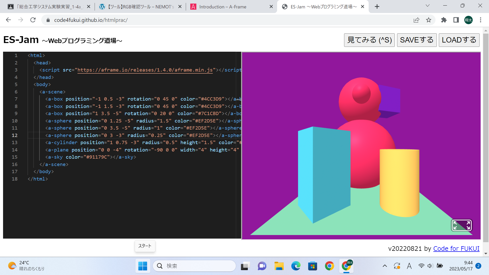
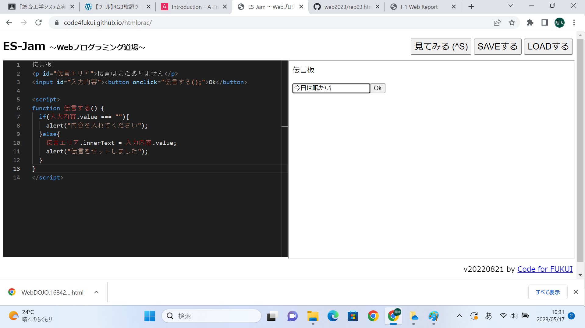

第3週目
3-1 JavaScript体験：VR空間を作る

自作した３次元空間
1.内容
Webプログラミング道場というサイトでA-frameというサイトからコピーしたプログラムを貼り付けて、実際にプログラムした3次元空間が動かせることを確認した後、プログラムの図形の位置や向きの値を変えてみた。
2.感想
図形の座標や向き、色はすべて数字で打ち込まれていてそれを変えたらいろんな形を作れておもしろかった。そして図形はコンピューターが反応する英語でプログラムされていたから、ちゃんと反応する
英語で打ち込めば座標や向きの他にも大きさや横幅、縦幅を変えることができるのか気になった。
3-2 JavaScript体験：伝言プログラムを作る

伝言板
1.内容
Webプログラミング道場でテキストにしたがって、文字を入力してセットボタンを押せば伝言が残せる伝言板のプログラムを書いた。
2.感想
3次元空間のプログラムはコピーしたものを貼り付けた後に値を変えたから簡単だったけど、自分で一からプログラムを書くときはコンピューターが反応するように書かないといけないし、一つでも間違えると
正しく動作しないので難しいと思った。実際に空入力ができないようにプログラムするところから書く量が多くなって大変だった。
3-3 JavaScriptプログラムの３次元空間の体験
1.内容
A-frameからコピーした3次元空間のプログラムを利用して先生が作ったプログラムで、実際に自分が3次元空間の中にいるかのような体験をVRでした。
2.感想
前回と同じようにガーディアンの境界線から出てしまったりして時間がかかったけど、実際に最初にプログラムした3次元空間の中にいるような感覚だったし、3次元空間のなかでコントローラーから
ボールを発射させることができたり、３つの立体をつかんで動かすことができたりして面白かった。